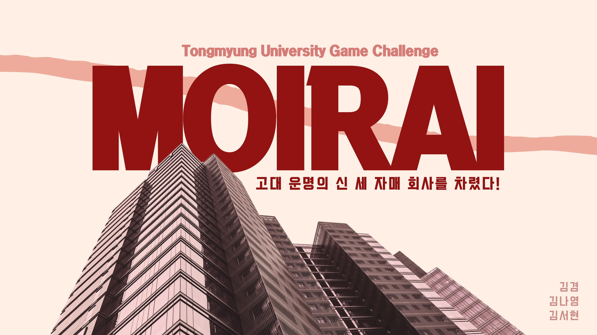
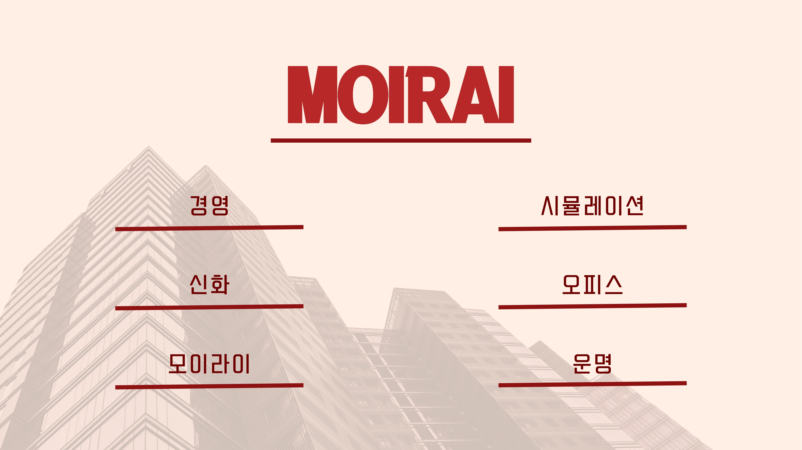
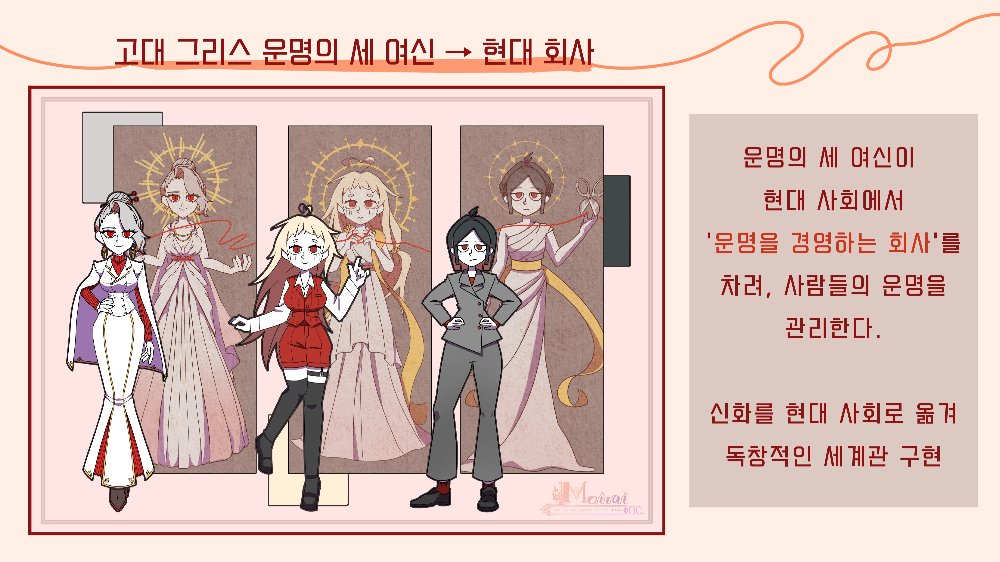
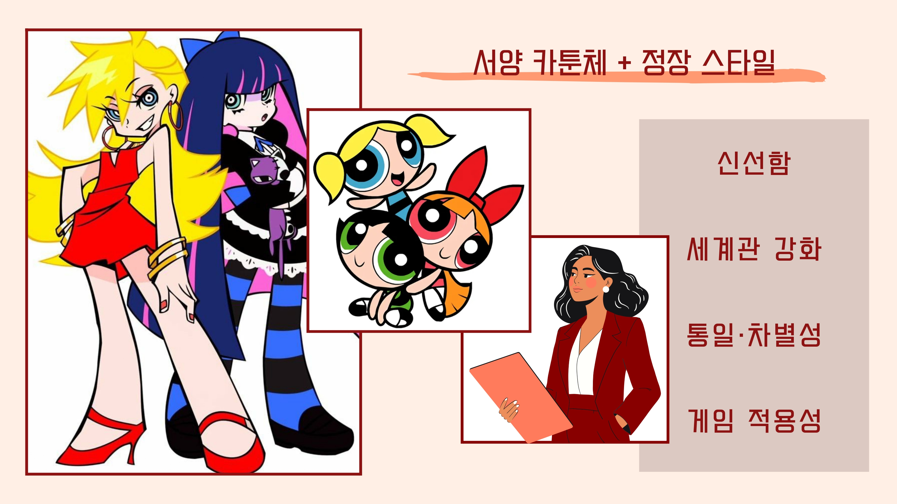
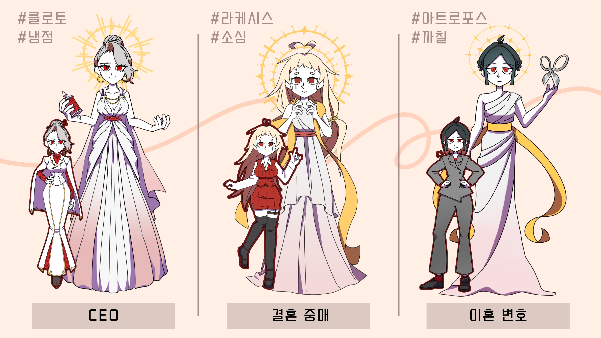
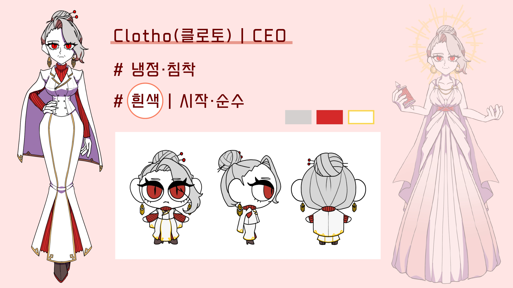
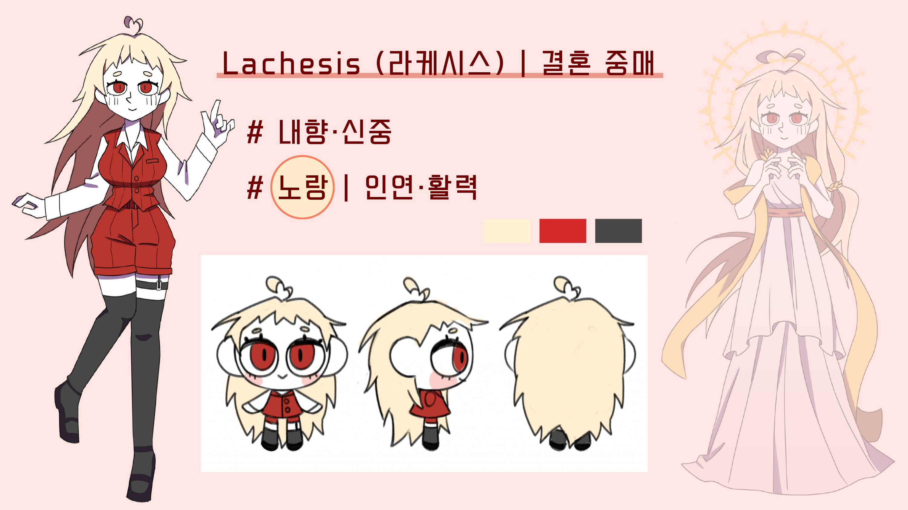
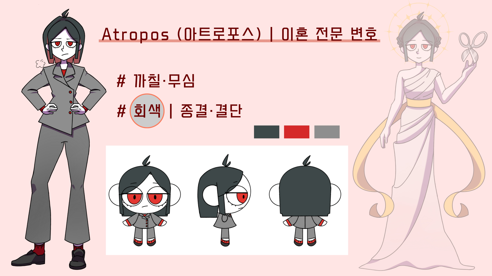
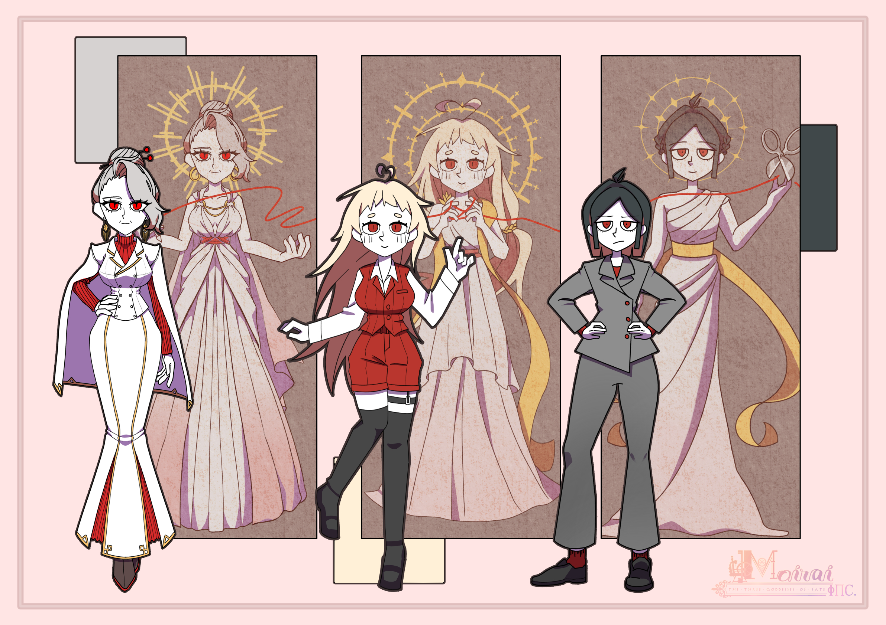

1. 클로토 (CEO)
'모이라이 Inc.'의 CEO인 클로토. 모든 실을 처음부터 만드는 여신. 흰색의 정돈된 수트와 차가운 시선은 그녀의 철저한 완벽주의를 상징한다. 클로토는 언제나 침착하고 논리적이며, 결과와 질서를 우선시하는 캐릭터로, 이러한 클로토의 성격으로 항상 좋은 결과물을 만들 수 있게 도움을 주는 회사의 지지대 역할을 하는 캐릭터 이다.

2. 라케시스 (중매사)
중매사인 라케시스는 귀여운 외모와 소심한 성격을 가졌지만, 신중함을 항상 가지고 있는 캐릭터로 실을 연결시키는 여신으로, 타인의 감정을 섬세하게 읽어내어 서로를 연결시켜주는 관겨의 실을 다룬다. 사람들 사이의 연결이 '운명'이 되기를 진심으로 바라며 노란빛의 머리카락은 그녀의 따스함과 조용히 빛나는 내면의 에너지를 닮은 듯한 느낌을 준다.

3. 아트로포스 (이혼 전문 변호사)
이혼 전문 변호사인 아트로포스는 실을 끊어내는 여신. 까칠하고 무덤덤하지만 언제나 날카로운 판단력을 지니고있어서 잘못 엮인 인연의 매듭을 단호하게 끊는다. 감정에 휘둘리는 일을 싫어하고, 불필요한 관계에 깊이 얽히지 않는다. 업무 시간 외에도 차가운 회색빛 사무실을 벗어나지 않으며, 타인의 감정에 깊이 관여하지 않으려고 한다.
